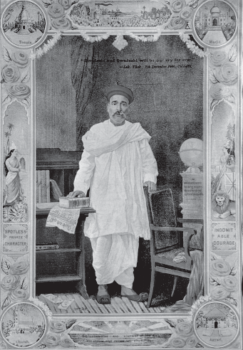
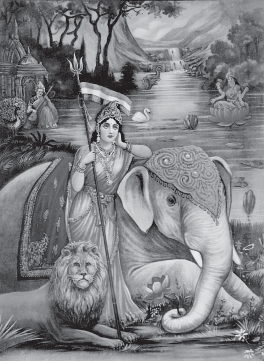

Nationalism spreads when people begin to believe that they are all part of the same nation, when they discover some unity that binds them together. But how did the nation become a reality in the minds of people? How did people belonging to different communities, regions or language groups develop a sense of collective belonging? This sense of collective belonging came partly through the experience of united struggles. But there were also a variety of cultural processes through which nationalism captured people’s imagination. History and fiction, folklore and songs, popular prints and symbols, all played a part in the making of nationalism.
The identity of the nation, is most often symbolised in a figure or image. This helps create an image with which people can identify the nation. It was in the twentieth century, with the growth of nationalism, that the identity of India came to be visually associated with the image of Bharat Mata. The image was first created by Bankim Chandra Chattopadhyay. In the 1870s he wrote ‘Vande Mataram’ as a hymn to the motherland. Later it was included in his novel Anandamath and widely sung during the Swadeshi movement in Bengal. Moved by the Swadeshi movement, Abanindranath Tagore painted his famous image of Bharat Mata (see Fig. 12). In this painting Bharat Mata is portrayed as an ascetic figure; she is calm, composed, divine and spiritual. In subsequent years, the image of Bharat Mata acquired many different forms, as it circulated in popular prints, and was painted by different artists (see Fig. 14). Devotion to this mother figure came to be seen as evidence of one’s nationalism.
Ideas of nationalism also developed through a movement to revive Indian folklore. In late-nineteenth-century India, nationalists began recording folk tales sung by bards and they toured villages to gather folk songs and legends. These tales, they believed, gave a true picture of traditional culture that had been corrupted and damaged by outside forces. It was essential to preserve this folk tradition in order to discover one’s national identity and restore a sense of pride in one’s past. In Bengal, Rabindranath Tagore himself began collecting ballads, nursery rhymes and myths, and led the movement for folk revival. In Madras, Natesa Sastri published a massive four-volume collection of Tamil folk tales, The Folklore of Southern India. He believed that folklore was national literature; it was ‘the most trustworthy manifestation of people’s real thoughts and characteristics’.

As the national movement developed, nationalist leaders became more and more aware of such icons and symbols in unifying people and inspiring in them a feeling of nationalism. During the Swadeshi movement in Bengal, a tricolour flag (red, green and yellow) was designed. It had eight lotuses representing eight provinces of British India, and a crescent moon, representing Hindus and Muslims. By 1921, Gandhiji had designed the Swaraj flag. It was again a tricolour (red, green and white) and had a spinning wheel in the centre, representing the Gandhian ideal of self-help. Carrying the flag, holding it aloft, during marches became a symbol of defiance.
Another means of creating a feeling of nationalism was through reinterpretation of history. By the end of the nineteenth century many Indians began feeling that to instill a sense of pride in the nation, Indian history had to be thought about differently. The British saw Indians as backward and primitive, incapable of governing themselves. In response, Indians began looking into the past to discover India’s great achievements. They wrote about the glorious developments in ancient times when art and architecture, science and mathematics, religion and culture, law and philosophy, crafts and trade had flourished. This glorious time, in their view, was followed by a history of decline, when India was colonised. These nationalist histories urged the readers to take pride in India’s great achievements in the past and struggle to change the miserable conditions of life under British rule.
| These efforts to unify people were not without problems. When the past being glorified was Hindu, when the images celebrated were drawn from Hindu iconography, then people of other communities felt left out. In 1930, Sir Muhammad Iqbal, as president of the Muslim League, reiterated the importance of separate electorates for the Muslims as an important safeguard for their minority political interests. His statement is supposed to have provided the intellectual justification for the Pakistan demand that came up in subsequent years. This is what he said: ‘I have no hesitation in declaring that if the principle that the Indian Muslim is entitled to full and free development on the lines of his own culture and tradition in his own Indian home-lands is recognised as the basis of a permanent communal settlement, he will be ready to stake his all for the freedom of India. The principle that each group is entitled to free development on its own lines is not inspired by any feeling of narrow communalism … A community which is inspired by feelings of ill-will towards other communities is low and ignoble. I entertain the highest respect for the customs, laws, religions and social institutions of other communities. Nay, it is my duty according to the teachings of the Quran, even to defend their places of worship, if need be. Yet I love the communal group which is the source of life and behaviour and which has formed me what I am by giving me its religion, its literature, its thought, its culture and thereby its whole past as a living operative factor in my present consciousness … ‘Communalism in its higher aspect, then, is indispensable to the formation of a harmonious whole in a country like India. The units of Indian society are not territorial as in European countries … The principle of European democracy cannot be applied to India without recognising the fact of communal groups. The Muslim demand for the creation of a Muslim India within India is, therefore, perfectly justified… ‘The Hindu thinks that separate electorates are contrary to the spirit of true nationalism, because he understands the word “nation” to mean a kind of universal amalgamation in which no communal entity ought to retain its private individuality. Such a state of things, however, does not exist. India is a land of racial and religious variety. Add to this the general economic inferiority of the Muslims, their enormous debt, especially in the Punjab, and their insufficient majorities in some of the provinces, as at present constituted and you will begin to see clearly the meaning of our anxiety to retain separate electorates.’ |

| COPYRIGHT © SA-2 IT PRACTICLESNationalism in India All rights reserved | |
| DESIGN BYDhirendra | POWERED BYSpydy |
{kind=link}